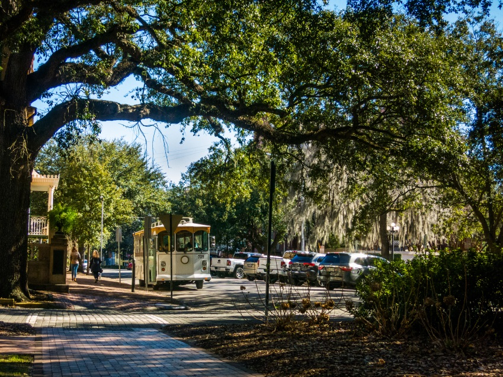

Je me répète un peu, mais nous avons en fait pris la route deux fois durant ces vacances, entrecoupé d'une pause de 10jours à Grennville puisque Pierre n'avait pas autant de vacances que moi. Allons-y dans l'ordre chronologique:
Atlanta. C'est là que j'ai atterri, et que Pierre m'a rejoint. Nous avons ensuite roulé vers la Nouvelle-Orléans, avec un pause dodo
à Pensacola, en Floride. Après quelques jours à la NO, nous sommes remontés vers le Nord et nous nous sommes arrêtés dans deux villes:
Memphis et Nashville. Et enfin nous avons rejoins Greenville, en Caroline du Sud, en passant la dernière nuit à Asheville.
Des jours plus tranquilles autour de Greenville, avec tout de fois une randonnée et un lever de soleil dans les montagnes de Caroline du Nord. Plus de détails sur tout ça dans la page "Autour de Greenville" :)
Avant que je reparte, nous sommes allés passer deux jours sur la côte est, à la frontière entre la Caroline du Sud et la Géorgie (no worries, il y aura des cartes, c'est promis!). Savannah est une ville très chouette ! Puis Pierre m'a raccompagné à Atlanta, et nous avions décidé d'y arriver l'avant-veille de mon vol pour visiter cette grande ville! C'est là que le voyage s'est terminé, retour à Greenville pour Pierre, et retour en France pour moi!
